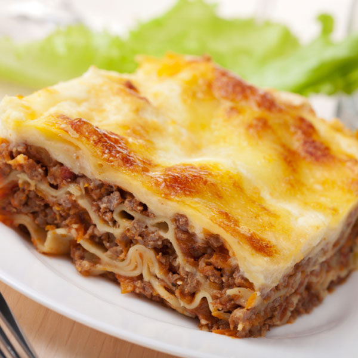

Opis
lazanje su ukusne
Sastojci:
- 1/2 kg miješanog mljevenog mesa (svinjetina i govedina, ili puretina i svinjetina)
- 2 glavice luka
- 3 žlice maslinovo ulje
- list lovora
- 2 grančice bosiljka
- 2 češnja češnjaka
- 1 žličica crvene paprike
- sol i papar po ukusu
- 200 ml pirea od rajčice
- malo vode za podlijevanje
Koraci:
- Zagrijati ulje na srednje jakoj vatri pa dodati na kockice narezani luk
- Kad se luk zastakli, dodati sitno nasjeckani češnjak
- Dodati mljeveno meso pa pirjati sve dok meso ne postane smeđe.
- Posoliti, popariti, dodati crvenu papriku, bosiljak i lovor.
- ve dobro izmiješati pa dodati rajčicu, smanjiti vatru na najslabiju, poklopiti i kuhati na tihoj vatri otprilike sat vremena. Povremeno promiješati i ako je potrebno dodati malo vode.